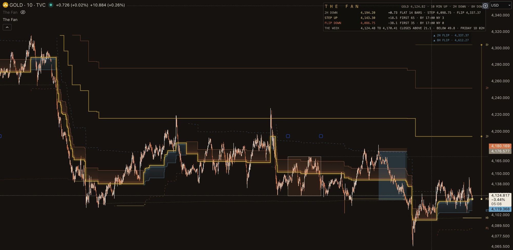

What it shows you
- The structure. One line through the market, moved only when price earns the move. The noise stays noise.
- The bigger clocks, on your clock. The 2 hour and 8 hour structure sits behind your 10 minute chart, and one panel reads every clock's direction at a glance.
- The week. The week's range on the chart, with the odds of the week closing above it or below it, printed as they stand.
Graded in the open
The weekly levels on the record are read off The Fan. Each one is written down before the close that grades it, graded on Friday's close in public, and kept when it is wrong. The Fan holds itself to the same rule on your chart: its own ledger shows what its odds said and what came.
What it is not
It does not tell you what to do, and it makes no forecast. It draws the structure. The decision stays yours.
The terms
Request access Access is by request. Send a direct message to @TheSimplifier7 on X with your TradingView username, and the desk answers within a working day.
Education and training. Not investment advice. No funds are handled. No result is promised. The licence.
If you want the method and not only the chart, the seat is on the record page. Four people at a time. The tool comes with it.